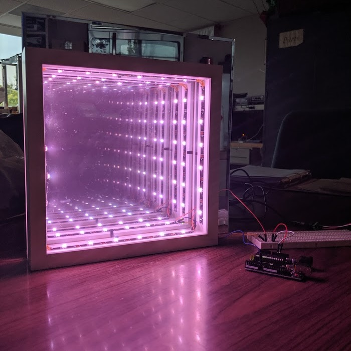
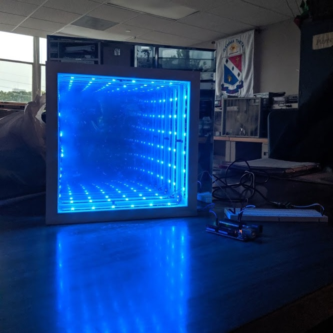

Hi! I'm Kylie Outlaw.
About Me
I am an undergraduate student at the Missouri Universty
of Science and Technology. I am studying computer engineering
with an emphasis in embedded systems.
My interest in engineering began when I was young; math was always my favorite subject
and I hoped to enter a field where I would always be learning something new.
My mom and I went to a "Women in Engineering" camp the year before I began high school
and I decided that day that I would become an engineer. In the future,
I aspire to work with embedded systems, helping to create products that
improve the everyday quality of life for people worldwide.
Here's a little more about me - I hope you like C++.
#ifndef STUDENT_H
#define STUDENT_H
#include < string >
struct student {
std::string * relevantCoursework;
std::string * inProgressCoursework;
std::string major;
std::string minor;
std::string college;
std::string expectedGraduation;
std::string resume;
std::string email;
float gpa;
};
#endif
#include "student.h"
int main()
{
student kylie; /* hey, that's me! */
/***************************
* overview
***************************/
kylie.major = "Computer Engineering";
kylie.minor = "Computer Science";
kylie.college = "Missouri University of Science and Technology";
kylie.expectedGraduation = "May 2022";
kylie.gpa = 3.96f;
/***************************
* completed coursework
***************************/
kylie.relevantCoursework = new std::string[] {
"Microcontrollers and Embedded System Design",
"Computer Organization and Design",
"Data Structures",
"Intro to Operating Systems",
"Intro to Computer Communication Networks" };
/***************************
* spring 2021 coursework
***************************/
kylie.inProgressCoursework = new std::string[] {
"Real-Time Systems",
"Intro to Network Security",
"Intro to Electronic Devices",
"Senior Design 1" };
/***************************
* find out more or contact me!
***************************/
kylie.resume = "kylieoutlaw.pdf";
kylie.email = "outlawkylie@gmail.com";
return 0;
}
Experience
Software Engineer Intern
Garmin International
September 2019 - Current
- Engineered and tested needed updates and bug fixes for the Garmin integrated flight deck displays.
- Created and updated module tests to verify FAA standards are being met.
- Updated the trainer build process to streamline the trainer sim process.
- Effectively communicated and collaborated with other teams to solve technical problems.
Technical Support Intern
Hyland Software
May 2019 - August 2019
- Diagnosed and resolved issues relating to Perceptive Intelligent Capture (Brainware).
- Created and implemented regular expressions (regex) to ensure proper data extraction from documents.
- Adjusted SQL Database tables to apply issue resolutions to customer environments.
- Displayed courtesy and strong interpersonal skills with all customer interactions.
Barista
Starbucks
June 2017 - January 2019
- Conversed and connected with customers and partners on a personal level.
- Communicated business needs with other partners.
- Partner of the Quarter, September 2017.
Projects
Infinity Mirror - finished!
I see pictures of cool infinity mirrors all the time on Pinterest, and I really wanted to make one myself.
I purchased a picture frame from IKEA that served as the frame for the mirrors, a 12" square mirror, individually addressable LEDs, and an acrylic one-way mirror.
The LEDs were programmed using an Arduino Uno along with the FastLEDs library.
Purchase parts ✔
Receive parts ✔
Design box ✔
Put together ✔
Test and Troubleshoot ✔


Computer Monitor Ambilight - in progress!
I think LEDs are really cool. My computer system is pretty neat, but my monitor feels lacking.
I want to add LEDs to the back of my monitor that will light up the same color as the monitor's edge.
Purchase parts ✔
Receive parts ✔
Design schematic ✔
Put together ~
Test and Troubleshoot ✘